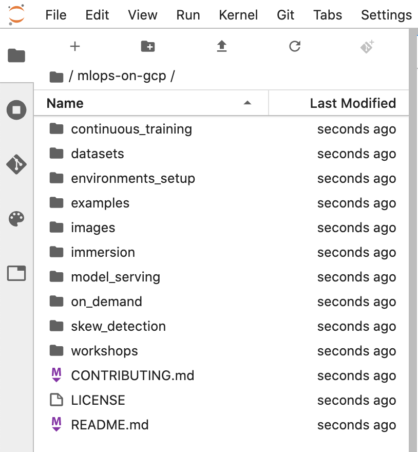

JupyterLab 인스턴스에서 mlops-on-gcp 노트북을 클론하려면 다음 안내를 따르세요.
1단계
JupyterLab에서 터미널 아이콘을 클릭하여 새 터미널을 엽니다.
2단계
명령줄 프롬프트에서 다음 명령어를 입력하고 Enter를 누릅니다.
클론된 저장소가 JupyterLab UI에 표시되지 않는 경우에는 상단 메뉴를 사용해 Git --> 저장소 클론에서 UI를 사용해 저장소를 클론(https://github.com/GoogleCloudPlatform/mlops-on-gcp)하면 됩니다.

3단계
mlops-on-gcp 디렉터리를 더블클릭하고 디렉터리의 콘텐츠를 볼 수 있는지 확인하여 저장소가 클론되었는지 확인합니다. 이 과정의 모든 Jupyter 노트북 기반 실습 파일은 이 디렉터리에서 확인할 수 있습니다.
